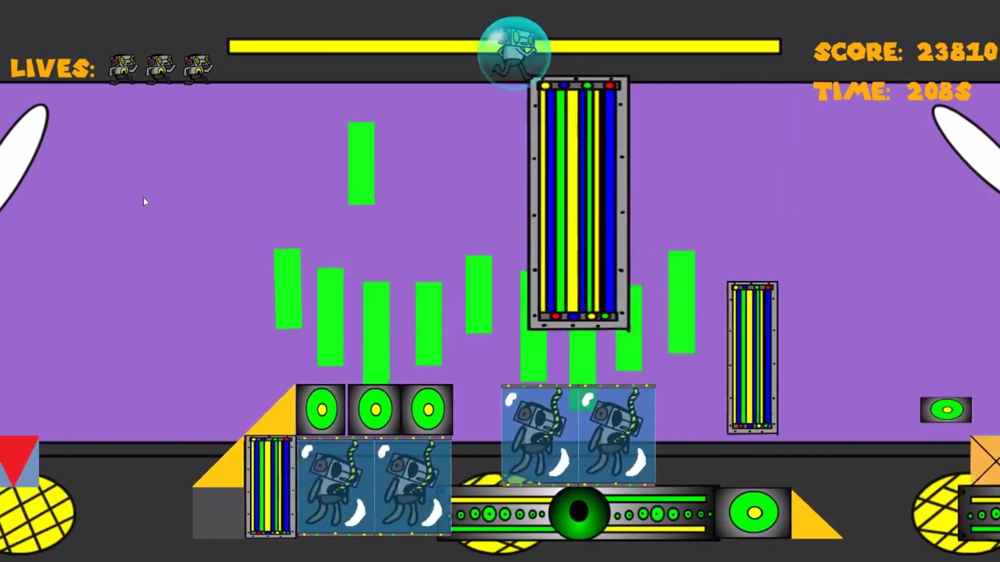
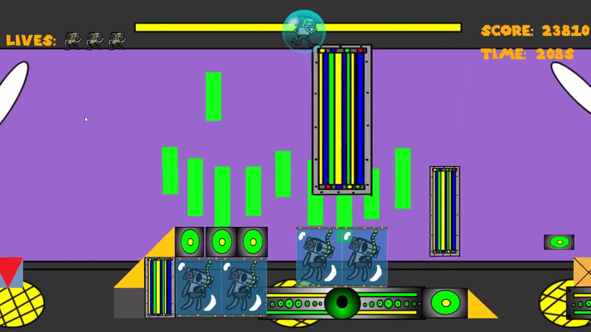

Track Attack
Track Attack is a music-based dynamically generated 2d platformer.
Players can import their own songs (.wav) and set their own difficulty (by changing the song's BPM), providing an effectively infinite number of levels and difficulty modes.
Download Game (PC)

Download Game (Mac)

Download Game Pitch


 
